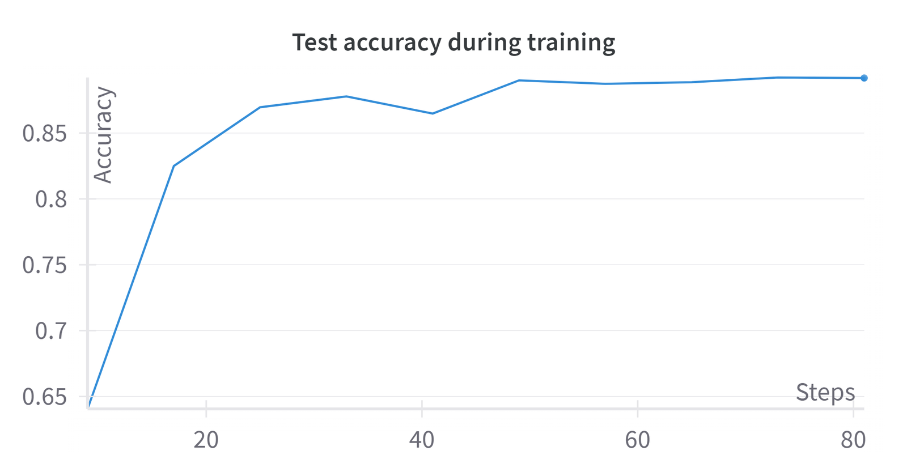

CS 7643 Deep Learning · Fall 2024
Lightweight Sentiment Analysis
Graduate team project
Compared a small fine-tuned language model with larger LLMs and classical machine-learning baselines on IMDb movie-review sentiment. A 135-million-parameter model reached 89.2% test accuracy after fine-tuning, close to a much larger GPT-2 baseline (92.36%) and to logistic regression with TF-IDF (89.14%), showing that a carefully tuned small model can stay competitive without the cost of a large LLM.